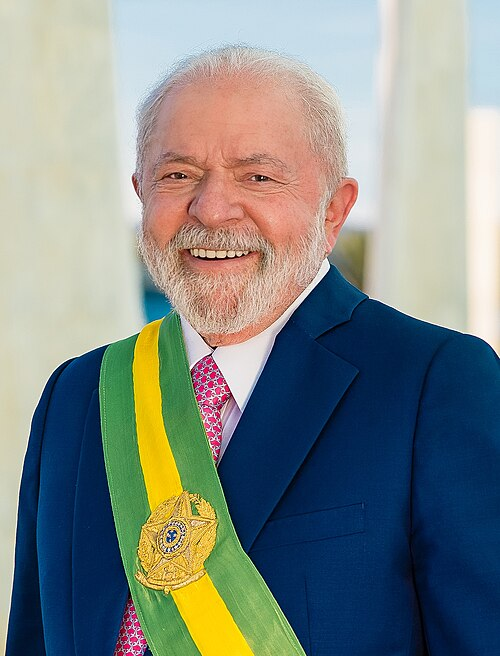

Política e engenharia química, com dados.
Escolha um dos dois cantos. Tudo tem fonte e se atualiza todo dia.


Últimas notícias
Política
O Brasil em números, governo por governo, e tudo da eleição. Toque num indicador para abrir o gráfico.
Notícias de política e economia
Engenharia química
Offshore, a trilha de estudo para o estágio, as empresas, o setor químico e a política que mexe com ele.
O setor químico em números
Abiquim e CeficPolítica e engenharia química
Por que a química brasileira está em crise
Em 2025 o Brasil importou US$ 72,4 bilhões em produtos químicos (+13%) e exportou só US$ 15,5 bilhões. Com tanto produto importado, principalmente da China, as fábricas daqui usaram só 64% da capacidade.
O gás natural caro é parte do problema: ele é matéria-prima e combustível de boa parte da indústria química.
O que o governo fez
Elevou temporariamente o imposto de importação de 30 grupos de produtos químicos (medida renovada em outubro de 2025) e adotou medidas antidumping. No 1º trimestre de 2026 a produção cresceu 22,8% sobre o fim de 2025 e as importações caíram 19,1%, segundo a Abiquim.
A Abiquim aposta no PRESIQ (projeto de lei 892/2025), em segurança jurídica e no mercado de gás livre.
Leis que mexem com a área
Combustível do Futuro (Lei 14.993/2024): mistura obrigatória e incentivos para biocombustíveis e biometano.
Minerais críticos (Lei 15.506/2026): incentivos para refinar terras raras e outros minerais no Brasil.
CONAMA 393/2007, NR-13 e NR-20: regras de descarte, vasos de pressão e inflamáveis que todo engenheiro químico de planta usa.
O que cada candidato propõe que afeta a química
Flávio: reduzir impostos sobre energia elétrica e combustíveis, revisar a reforma tributária para baixar o IVA, desonerar exportações e investimentos, licença ambiental com prazo.
Lula: política industrial (Nova Indústria Brasil), Petrobras de volta à produção de fertilizantes e às compras públicas puxando a produção nacional.
Do plano de governo de cada um. Veja tudo em Planos 2026.
China: a potência química do mundo
A China responde por 46% das vendas mundiais de produtos químicos (Cefic, 2025); a Europa, por 13%. Isso explica a pressão dos importados sobre as fábricas brasileiras e o debate sobre tarifas.
Químicos e engenheiros no poder
Curiosidades verdadeiras, com fonte.
Xi Jinping, presidente da China
Estudou engenharia química na Universidade Tsinghua, em Pequim, de 1975 a 1979. Depois fez doutorado em Direito (teoria marxista) na mesma universidade. Críticos lembram que o currículo tinha muitas aulas de marxismo e que ele nunca trabalhou como engenheiro.
Ou seja: o líder da maior potência química do mundo tem diploma da sua área.
Hu Jintao, presidente anterior da China
Formado em engenharia hidráulica, também em Tsinghua. Por anos a cúpula chinesa foi chamada de “tecnocrata” por ter tantos engenheiros.
Angela Merkel, ex-chanceler da Alemanha
Doutora em química quântica. Trabalhou como pesquisadora na Academia de Ciências de Berlim Oriental antes de entrar na política.
Margaret Thatcher, ex-primeira-ministra britânica
Formou-se em química em Oxford e trabalhou como química pesquisadora na indústria antes da carreira política.
Notícias de química e offshore
2º turno ao vivo
Domingo, 25 de outubro. Atualizado todo dia pelo robô, com fonte em tudo.
Ver todos os números em tabela
Governos lado a lado
Escolha um governo. Para taxas, o que ele recebeu e o que entregou; para resultados anuais, a média do mandato.
“Melhorou” e “piorou” comparam só o número de chegada com o de saída. Não dizem quem causou: muitos efeitos chegam atrasados e vários dependem do mundo e dos estados.
Brasil e o mundo
Muito do que aparece nos gráficos veio de fora: commodities, juros americanos, pandemia, guerras e a disputa China × EUA.
Para onde vão nossas exportações
Fatia do total exportado em 2025 · MDIC
- A China é a maior parceira desde 2009. Em 2025 comprou cerca de US$ 100 bilhões (+6%).
- Os EUA caíram de 12,0% para 10,8% das nossas vendas no ano do tarifaço.
- Exportação recorde em 2025: US$ 348,7 bilhões.
Homicídios perto dos vizinhos
Por 100 mil habitantes, 2023 · UNODC
- O Brasil caiu de 31,2 (2017) para 19,3 (2023), mas ainda mata mais de 3 vezes o que matam EUA e Chile.
Como o mundo mexeu nos números do Brasil
Terras raras
17 elementos usados em ímãs de carros elétricos, turbinas, celulares e mísseis. O Brasil tem a 2ª maior reserva do mundo e quase não produz.
Reservas
Milhões de toneladas · USGS
A ANM, mais conservadora, fala em 11,4 milhões de toneladas para o Brasil.
Produção em 2025
Toneladas por ano · USGS
O Brasil faz cerca de 0,5% da produção mundial.
O peso da China
Fatia chinesa no mundo · AIE, 2024
Quanto tempo a reserva duraria?
Escolha um ritmo de produção. É só uma divisão dos 21 milhões de toneladas, para dar escala.
E com cada governo, quanto tempo levaria?
Uma mina leva, em média, mais de 16 anos da descoberta à primeira produção (Agência Internacional de Energia). Um mandato tem 4. O que um governo muda é a velocidade da licença, o crédito e se o Brasil vai refinar ou só exportar minério.
- Hoje: a Serra Verde (GO) começou a produzir em 2025, com capacidade de cerca de 5 mil toneladas por ano. A Lynas comprometeu mais de US$ 500 milhões no projeto Caldeira (MG).
- Lei 15.506/2026 (16/09/2026): Política Nacional de Minerais Críticos.
- China: as vendas brasileiras de terras raras para lá triplicaram no 1º semestre de 2025 (US$ 6,7 milhões), valor pequeno perto dos US$ 47,7 bilhões vendidos à China no total.
- Lula: defende refinar no Brasil e criar indústria nacional. Sem meta nem prazo.
- Flávio: licença mais rápida, crédito, refino no país e capital estrangeiro. Sem meta nem prazo.
Offshore e FPSOs
Do básico ao avançado: como o setor funciona, como as empresas se organizam e competem, e o que está acontecendo agora no Rio.
Trilha: do básico ao avançado
Toque num nívelNível
1O básicoO que é offshore, o que é um FPSO e de onde vem o dinheiro
O que é “offshore”
É tudo o que acontece no mar: achar, produzir e transportar petróleo e gás longe da costa. No Brasil, quase tudo vem das bacias de Santos e de Campos, em frente ao Rio, a São Paulo e ao Espírito Santo.
O pré-sal responde por cerca de 80% da produção: são reservatórios a mais de 2 mil metros de água, abaixo de uma grossa camada de sal. É caro e difícil, mas os poços produzem muito.
O que é um FPSO, em 4 passos
1. Produção: óleo, gás e água sobem dos poços por dutos flexíveis (risers).
2. Processamento: a planta no convés separa as três fases e trata gás e água.
3. Armazenamento: o óleo fica nos tanques do casco.
4. Transferência: navios aliviadores levam o óleo; o gás vai por gasoduto, é reinjetado ou vira combustível.
Outros tipos de unidade
Fixa (jaqueta): estrutura de aço apoiada no fundo, para águas rasas.
Semissubmersível: flutua sobre colunas e flutuadores; não armazena óleo.
FSO: só armazena e transfere, sem processar.
FPSO: o padrão do pré-sal, porque produz e armazena longe da costa, onde não há oleoduto.
De onde vem o dinheiro
Quem arrisca na descoberta é a operadora. A afretadora arrisca na obra e depois vive de receber a diária por 15 a 25 anos, desde que a plataforma funcione.
Unidades que todo mundo usa
Barril: cerca de 159 litros.
boe: barril de óleo equivalente, que soma óleo e gás pela energia.
Brent: petróleo de referência para o preço mundial, em dólares por barril.
m³ de gás: a capacidade de compressão de um FPSO é dada em milhões de m³ por dia.
Nível
2Por dentro de uma empresaOs setores, o que cada um faz e o que um estagiário faz lá
Nível
3Estratégia e posicionamentoTipos de empresa, quem depende de quem e como cada uma tenta ganhar
Os seis tipos de empresa do setor
Estatal operadora (Petrobras): dona da maior parte do pré-sal, compra muito e dita o padrão técnico. Ganha com escala.
Majors internacionais (TotalEnergies, Shell, Equinor): portfólio no mundo todo; entram como sócias em campos grandes ou operam alguns. Ganham escolhendo projetos de custo baixo.
Independentes (BW Energy, PRIO): compram campos menores ou maduros e cortam custo. Ganham com eficiência.
Afretadoras de FPSO (MODEC, SBM, BW Offshore, Ocyan): constroem e operam plataformas. Ganham com histórico de entrega e contratos longos.
Serviços e equipamentos (subsea, sondas, barcos, gases como a White Martins): vendem para todas as anteriores.
Energia e gás (Eneva, Engie): transformam gás e outras fontes em eletricidade.
Quem depende de quem
Como cada uma tenta ganhar
Petrobras: plataformas próprias em série (série 80, contratadas por EPC) para baixar custo e ganhar velocidade.
SBM: casco padronizado (Fast4Ward) e contratos que garantem retorno por anos; prometeu ao menos US$ 2,1 bilhões aos acionistas em 6 anos.
MODEC: forte presença no Brasil, com 12 FPSOs operando no país; mais de 26% da produção nacional de 2024 passou pela frota dela.
PRIO: compra campos maduros que as grandes vendem e corta custo (US$ 8,9 por barril no 2º tri/2026).
Subsea7 e TechnipFMC: vendem o pacote submarino completo; a TechnipFMC fabrica dutos flexíveis no Porto do Açu (RJ).
Radix: engenharia, automação e software, unindo processo e tecnologia.
BW Offshore: frota pequena e muito disponível (99,7% em 2025); a BW Energy compra campos para produzir.
TotalEnergies: sócia em Mero, Atapu e Sépia e operadora de Lapa.
White Martins: contratos longos de gases e entrada no biometano.
Eneva: tira gás em terra e gera energia ao lado, do poço ao fio.
Engie: geração renovável e transmissão, crescendo por aquisições como a de Jirau.
Ferramentas de estratégia aplicadas (Porter e SWOT)
5 forças no afretamento de FPSO: poucos concorrentes; barreira de entrada altíssima (bilhões e anos de obra); comprador fortíssimo (Petrobras); fornecedores concentrados (estaleiros asiáticos); substitutos quase não existem no pré-sal.
SWOT de uma afretadora no Brasil: força, contratos de 20 anos; fraqueza, depender de um cliente; oportunidade, fila de novos campos e gás; ameaça, Petrobras fazer plataformas próprias e atrasos de estaleiro.
Riscos que todas precisam gerenciar
Preço do petróleo, atraso de obra, câmbio, juros (os projetos são financiados), mudança de regra, acidente grave e transição energética. A gestão de riscos e o SGI existem para manter esses riscos sob controle.
Nível
4O mercado agoraOs próximos FPSOs e as tendências de 2026
Próximos FPSOs no Brasil
Tendências
Produção recorde: Petrobras com 3,34 milhões de boe por dia no 2º trimestre de 2026.
Próprias × afretadas: a Petrobras passou a encomendar suas plataformas em série, mas ainda contrata afretadoras, como a SBM em Sergipe.
Poucas afretadoras com fôlego: elas escolhem os projetos e cobram mais.
Descomissionamento: plataformas antigas da Bacia de Campos no fim da vida viram um mercado de serviços.
Gás e transição: gás de Sergipe, biometano, hidrogênio, captura de CO₂ e minerais críticos (Lei 15.506/2026).
Números para guardar
4,25 mi barris/dia de produção no Brasil (mar/2026, ANP).
~80% vem do pré-sal.
US$ 109 bi de investimento no plano da Petrobras 2026–2030, 75% em exploração e produção.
11 plataformas previstas em Búzios no fim de 2027.
225 mil barris/dia é a capacidade de cada plataforma da série 80.
Nível
5Pronto para a entrevistaSGI, segurança de processos e as questões abaixo
Os módulos de SGI, segurança de processos e estágio estão na aba Aprender. Depois, faça as questões para pensar logo abaixo.
Questões para pensar
Empresas
Toque para abrir a fichaNotícias do setor
Notícias
Brasil, mundo, engenharia química e offshore, com link para a fonte.
Mapa dos planos de governo
O que Lula e Flávio registraram no TSE, tema por tema. Quando o plano não fala de algo, o mapa diz isso.
Resumos dos planos registrados no TSE, com página quando a fonte informa. Antes de citar, confira no PDF: plano de Flávio · plano de Lula.
Como ler e de onde vêm os dados
Antes de usar um número num debate
Ano de transição. Dilma foi afastada em 12/05/2016. Nos dados anuais, 2016 fica fora das médias de governo.
Efeito atrasado. Juros levam de 6 a 18 meses para mexer na inflação; uma reforma pode levar anos.
Coincidir não é causar. Segurança é sobretudo dos estados. Pandemia, guerra e commodities pesam sobre qualquer presidente.
Medidas diferentes. Homicídios até 2023 vêm do UNODC; 2024 e 2025 são “mortes violentas intencionais” do Fórum de Segurança, que soma latrocínio e mortes por polícia.
Feminicídio. Crime criado em março de 2015. Parte da alta vem de as polícias classificarem melhor.
Fontes
- IBGE, PNAD Contínua 4099 (desemprego) e 8529 (informalidade)
- IBGE, Contas Nacionais (PIB)
- Banco Central, SGS: 432 (Selic), 13522 (IPCA), 13762 (dívida), 5793 (primário), 3698 (dólar)
- UNODC via Our World in Data
- Fórum Brasileiro de Segurança Pública, Anuário 2026
- Fast Company Brasil (USGS, AIE) e CEBC
- MDIC via IstoÉ Dinheiro; Amcham via SpaceMoney
- Agência Gov (P-82); InfoMoney (produção Petrobras); Offshore Energy (SBM); Offshore Energy (MODEC); JPT (BW Maromba); TotalEnergies (Lapa)
- Exame (White Martins); Eneva; Engie Brasil
- Fotos via Wikimedia Commons: Dilma (Roberto Stuckert Filho/PR), Temer (Beto Barata/PR, CC BY 2.0), Bolsonaro (Isac Nóbrega/PR, CC BY 2.0), Lula (Ricardo Stuckert/PR, CC BY 2.0), Flávio Bolsonaro (Agência Senado), Congresso Nacional (Ivolindbergh, CC BY-SA 4.0), Palácio do Planalto (Senado Federal, CC BY 2.0), FPSO ao pôr do sol (Ptérodactyl Ivo, CC BY 2.0). Imagens das notícias: dos próprios veículos, com crédito em cada matéria.
- Agência Senado (1º turno); planodegoverno2026.com.br e Voto por Ideias (planos)
Trilha exponencial
Leia a lição, acerte a pergunta rápida e confirme. Cada lição concluída destrava as próximas, e toda manhã entram lições novas.
Biblioteca
Resumos para consultaGlossário do setor
Buscar
Procura no app inteiro. Se não achar, pergunte ao Claude com a sua conta, logo abaixo.
Pesquisar com o Claude
Abre uma conversa na sua conta do Claude (app ou site), já com a pergunta escrita. Lá ele pode pesquisar na internet e citar as fontes.
Resposta rápida aqui mesmo
Só funciona com o app aberto dentro do Claude. A resposta vem do conhecimento do Claude, sem pesquisar na internet na hora.
Debate
O que não contam, o que cada lado responde e como rebater, sempre com o dado oficial. Mais checagens de falas, sigilos e o caso Master.